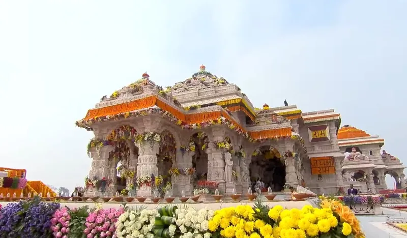

Home / Blog / Ayodhya Tour Cost from Delhi

In this guide
This is one of the most common questions travelers ask before planning a trip to Ayodhya. After the inauguration of the Ram Mandir, the city has attracted millions of devotees from across India. As a result, many tourists want to understand the package cost, inclusions, and travel options before making a booking. If you are looking to book directly, you can explore our customized Delhi to Ayodhya Tour Package which includes all-inclusive transfers, hotel stays, and priority darshans.
The price of an Ayodhya tour package from Delhi depends on several factors. Transportation, hotel category, sightseeing options, and trip duration determine the overall package cost. Therefore, understanding these factors can help you choose the right package according to your budget.
Ayodhya tour cost from Delhi
Budget-friendly Ayodhya tour packages generally cost between ₹6,000 and ₹10,000 per person. Travel companies typically provide train tickets, standard hotel accommodation, local transfers, and basic sightseeing in these packages.
Moreover, budget packages are ideal for pilgrims who want a comfortable trip without spending too much. Many travel operators also offer group tours at affordable prices. If you want a tailored plan, you can connect with a customized tour planner like Trip Customizer to adjust settings according to your preference.
Delhi to Ayodhya package price
If you prefer better comfort and additional services, you can choose a mid-range package. These packages usually cost between ₹12,000 and ₹20,000 per person.
In addition, travelers often receive upgraded hotel stays, private transportation, and guided sightseeing. Most tour operators include Ram Mandir, Hanuman Garhi, Kanak Bhawan, and Saryu Ghat in their itineraries. To book or inquire, you can explore packages on our Ayodhya Dharshan Booking Portal, visit our contact page, or combine it with a trip to Varanasi through Kashi Dharshan Yatra.
Luxury Ayodhya Tour Packages
Luxury travelers can expect package prices starting from ₹25,000 per person. Some premium tours may cost ₹50,000 or more depending on the services offered.
Furthermore, luxury packages often include flight tickets from Delhi, premium hotels, private vehicles, VIP assistance, and customized travel plans. Consequently, these packages provide a hassle-free and comfortable spiritual experience.
Factors That Affect Package Cost
Several factors influence the final tour price. First, the mode of transportation plays a major role. Flight-based packages generally cost more than train packages. Second, hotel quality can significantly increase the overall budget.
Additionally, festival seasons and special religious events often lead to higher prices because demand increases during these periods.
Final Thoughts
The cost of an Ayodhya tour package from Delhi usually ranges from ₹6,000 to ₹50,000 or more per person. However, the final amount depends on your travel preferences and package inclusions. Therefore, it is wise to compare multiple options before making a booking.
Whether you choose a budget package or a luxury pilgrimage, an Ayodhya trip offers a memorable spiritual experience filled with faith, culture, and history.
Frequently Asked Questions
Q1. What is the average cost of an Ayodhya tour package from Delhi?
The average cost ranges between ₹6,000 and ₹20,000 per person, depending on transportation, hotel category, and package inclusions.
Q2. Is train travel included in Ayodhya tour packages from Delhi?
Many budget and standard packages include train tickets, hotel accommodation, local transfers, and sightseeing.
Q3. Are flight-based Ayodhya tour packages available from Delhi?
Yes, several travel operators offer flight-inclusive packages, typically starting from ₹15,000 to ₹25,000 per person.
Q4. How many days are enough for an Ayodhya trip?
A 2-day or 3-day itinerary is generally sufficient to visit Ram Mandir and other major attractions in Ayodhya.
Q5. What places are covered in an Ayodhya tour package?
Most packages include Ram Mandir, Hanuman Garhi, Kanak Bhawan, Ram Ki Paidi, Saryu Ghat, and other important religious sites.
Ready to go?
Let us plan this yatra for you
Share your dates and group — we'll send a tailored itinerary and quote, with no obligation.